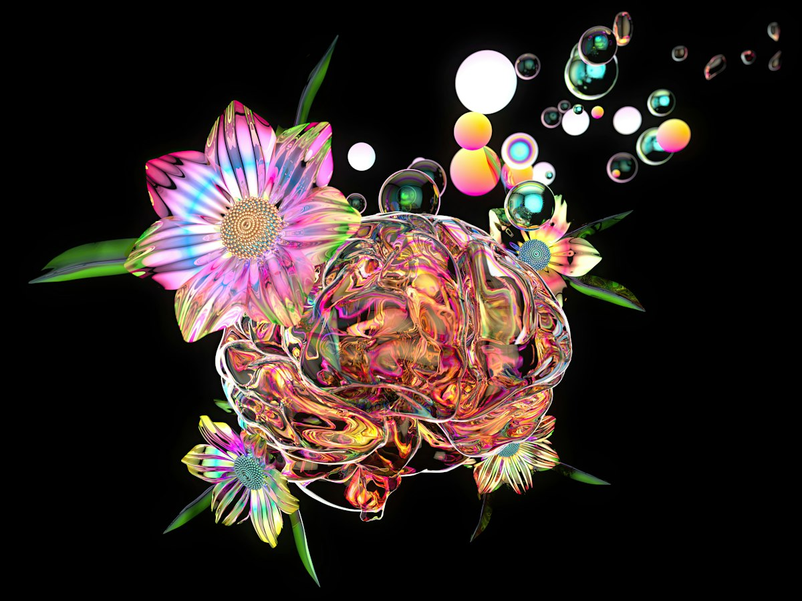

Content generatie
Weave & Claude Cowork
Je genereert beelden en video met AI-tools zoals Weave, en leert hoe je met goede prompts een consistente stijl bewaakt. Met Claude Cowork laat je AI zelfstandig taken uitvoeren op je eigen bestanden: teksten schrijven, documenten opmaken en content plannen. Je ontdekt waar AI je werk versnelt en waar je zelf moet bijsturen.
- Weave
- Claude Cowork
- Prompting
Probeer het: bouw een prompt
een bloem tussen zwevende bellen

Kies één of meer stijlen.

Social media
Figma automation
In Figma Buzz bouw je templates voor verschillende formaten, zoals Instagram-posts, stories en display-banners. Via bulk create vul je die templates automatisch met data uit een CSV- of XLSX-bestand: titels, taglines, call-to-actions en afbeeldingen. Eén spreadsheet levert zo een volledige campagne op in alle formaten, met een consistent design.
Probeer het: pas de spreadsheet aan